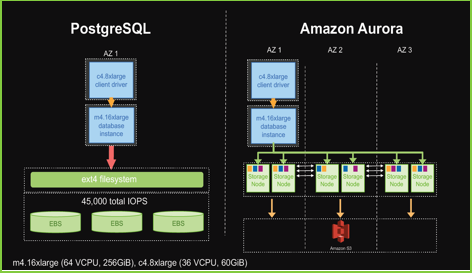
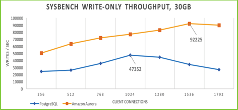
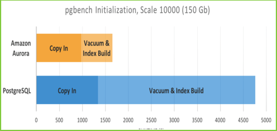
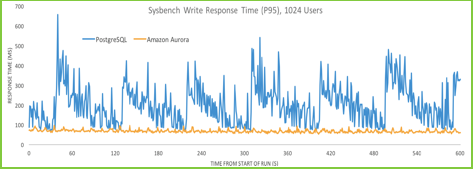
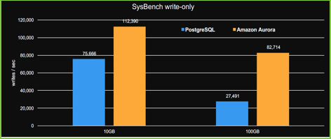
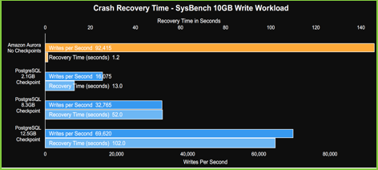

National Archives Catalog (NAC)
And
Description and Authority Services (DAS)
Assessment and Recommendations for Amazon Aurora Relational Database Service (PostgreSQL Version) and AWS ElasticSearch Service
Version 1.0
November 15, 2017
Prepared for:
National Archives and Records Administration (NARA)
Catalog Task NAMA-16-G-005, DME 16 Task 005
Prepared by:
1760 Old Meadow Road
McLean, VA 22102
Acknowledgements:
PPC would like to acknowledge the significant technical contributions made by the following staff:
§ Dr. Urmi Majumder
§ John Henson
§ Edwin Piedmont
§ Matthew Mariano
§ Fawad Shaikh
§
Aurora
Rischak
Table of Contents
1.1.2 AWS Elasticsearch Service
1.2 Why Consider Amazon Aurora and AWS Elasticsearch Service for Modernization?
2.1.1 Benchmark System Configuration
2.2.1 Vertical Scalability/Scaling Up
2.2.2 Horizontal Scalability/Scaling Out
2.4.1 Why Consider PostgreSQL–Compatible Amazon Aurora over MySQL–Compliant Amazon Aurora?
3 Assessment of AWS’s Managed Service for Elasticsearch
List of Figures
Figure 1: Server Configuration for PostgreSQL Running on EC2 and Amazon Aurora RDS
Figure 2: SysBench Write-Only Throughput for PostgreSQL Running on EC2 and Amazon Aurora RDS
Figure 5: PostgreSQL Running on EC2 and Amazon Aurora RDS Write Throughput Comparison
Figure 6: Crash Recovery Time Comparison between Amazon Aurora RDS and PostgreSQL Running on EC2
List of Tables
Table 1: Differences between MySQL-Compliant Amazon Aurora and PostgreSQL-Compatible Amazon Aurora
As of September 2017, we have almost 19 million Descriptions in Description and Authority Services (DAS) stored as structured Extensible Markup Language (XML) and 37 million links to digitized materials. National Archives and Records Administration (NARA) is looking to ingest an additional 6 billion Descriptions and 25 billion digital objects by the end of this decade. Based on Project Performance Company’s (PPC’s) extensive experience supporting NARA and working with DAS and National Archives Catalog (NAC) systems, PPC knows that these systems cannot accommodate the significant growth anticipated in digital objects and corresponding Descriptions, and meet NARA’s strategic goal of Make Access Happen. The current system design for DAS using Oracle 12c running on single-node first-generation Amazon Web Services (AWS) instances as a data store cannot support the anticipated growth in digital images and corresponding descriptions. While current NAC search servers can scale horizontally to support such growth, it is dependent on a weekly export of Description and Authority data as structured XML from DAS to be ingested by its Content Processing module and indexed in its Apache Solr based search engine before the public can discover information about the new and updated NARA’s holdings through keyword, advanced searches, by provenance, and other access points controlled by the DAS Authority files.
The primary business driver for this modernization effort is for PPC to build a system that can keep up with the ever-increasing volume of archival Descriptions that are needed to describe the billions of records generated by the federal government each year. To that effect, PPC will redesign DAS as a scalable application that will allow NARA to not only meet but exceed their existing production quotas for entering records into DAS, and establish tighter integration between DAS and NAC so that records are available for the public to view in NAC as soon as they are approved in DAS. PPC will design a new, horizontally-scalable data store implemented in Amazon Aurora and shared between DAS and NAC, and a new search cluster implemented in AWS Elasticsearch Service that can service both NAC and DAS. The combined data store and search cluster for NAC and DAS is expected to provide substantial cost savings from the current cost of Oracle licenses, and the number and type of AWS instances that currently host Oracle (DAS) and Apache Solr (NAC) and perform NAC ingestion.
Amazon started offering relational database as a service in the AWS cloud in 2009, launching Amazon Relational Database Service (RDS) with MySQL engine. Then in Re-invent 2014, AWS announced Amazon Aurora, a MySQL compatible database offering enhanced high availability and performance. AWS customers loved the focus on high availability, and the built-in encryption in the design of the Aurora database. Aurora is built around fault-tolerant, self-healing storage that allows scaling storage from 10 gigabytes (GB) all the way up to 64 terabytes (TB) without pre-provisioning. Furthermore, Aurora makes six copies of the data across three availability zones and backs it up to Amazon Simple Storage Service (S3) without impacting performance or availability. As the application scales, it is possible to create up to 15 low-latency read replicas that draw from common storage.
Amazon ElasticSearch Service is a fully managed service that makes it easy for customers to deploy, secure, operate and scale ElasticSearch, an open source full text search engine in the AWS cloud. AWS customers can deploy a production-ready Elasticsearch cluster in minutes using Amazon Elasticsearch Service without having to worry about provisioning infrastructure or installing and maintaining Elasticsearch software. Amazon Elasticsearch Service is a fully managed service that simplifies time-consuming management tasks such as software patching, failure recovery, backups, and monitoring.
Security is another important feature of this managed service from AWS. AWS customers can easily set up secure access to Amazon Elasticsearch Service from their VPC to keep all traffic between their VPCs and Amazon Elasticsearch Service within the AWS network. They can also control access to their Amazon Elasticsearch Service domain using security groups and AWS Identity and Access Management (IAM) policies. Additionally, Amazon Elasticsearch Service routinely applies security patches and keeps the customer domain up-to-date.
Amazon Elasticsearch Service is designed to be highly available using zone awareness, which replicates data between two availability zones in the same region. Amazon Elasticsearch Service monitors the health of the clusters and automatically replaces failed nodes.
Amazon Elasticsearch Service enables customers to monitor their cluster through Amazon CloudWatch metrics and resize their cluster up or down via a single application programming interface (API) call. Furthermore, they can configure their cluster to meet their performance requirements by selecting from a range of instance types and storage options including solid state drive (SSD)-powered Elastic Block Storage (EBS) volumes.
Currently DAS is using Oracle on Elastic Compute Cloud (EC2) as its database engine. Because of the prohibitive licensing costs for an Oracle database, NARA has been looking to move to an open-source relational database such as MySQL and PostgreSQL as well as using more managed services from AWS with this modernization effort. To that effect, we looked at the different database engines that AWS RDS offers.
For the modernized application, we recommend using PostgreSQL-compatible Amazon Aurora as the database engine. Our choice of PostgreSQL-compatible Amazon Aurora is based on key factors such as performance, scalability, stability, suitability, security, and overall cost that are elaborated on in Section 2. Besides reviewing benchmarking information available from AWS, we also implemented the fully relational data model for DAS in PostgreSQL-compatible Amazon Aurora and performed load testing on the same database using this data model during Task Order 5, which further solidifies our recommendation of PostgreSQL-compatible Amazon Aurora as the database of choice for modernized DAS application.
The existing NAC and DAS search engine functions are implemented by two different systems based on completely different technologies. DAS relies on its Oracle database search capabilities, while NAC’s core feature—search—depends on a cluster of servers dedicated to search functions. This cluster is implemented using Apache SolrCloud, hosted on four AWS EC2 instances. Custom, proprietary, third-party plugins extend the base Solr installation to provide basic catalog search features and perform simple tasks such as query-building.
While both search systems can scale horizontally, expansion comes with complicated configuration and management consequences. How search cluster scales could have an unexpected performance effects. In addition, there are numerous details to be considered when standing up additional servers to expand the search system. These details must be considered before implementation, and subsequently managed and monitored by qualified staff to ensure the functions behave as expected with minimal downtime. Lastly, more servers in the system, regardless of whether they are search servers or not, bring additional security risks that must also be managed. By moving to an AWS Elasticsearch managed service, these factors can be reduced or eliminated to better serve NARA’s missions. Like our assessment of Amazon Aurora, our basis for selecting a search index implementation includes six criteria: performance, scalability, stability, suitability, security, and overall cost. This is elaborated on in Section 3.
As mentioned in the introductory section, our basis for selecting a database implementation includes six criteria: performance, scalability, stability, suitability, security, and overall cost. This section explains how Amazon Aurora satisfies each criterion.
Amazon Aurora delivers significant increases over traditional PostgreSQL performance by tightly integrating the database engine with an SSD-based virtualized storage layer purpose-built for database workloads, reducing writes to the storage system, minimizing lock contention and eliminating delays created by database process threads. Internal tests performed by AWS in its own laboratory environment with SysBench on r4.16xlarge instances show that Amazon Aurora delivers SELECTs/sec and UPDATEs/sec over three times higher than PostgreSQL running the same benchmark on the same hardware. Detailed instructions on this benchmark and how it can be replicated are provided in the Amazon Aurora PostgreSQL Performance Benchmarking Guide.
The following subsections present benchmarking information provided to NARA by AWS Senior Solution Architect Kyle Hart to NARA on September 15, 2017. Amazon Aurora performance assessment was made using the SysBench benchmarking tool.
The setup consists of one Amazon EC2 c4.8xlarge Linux instances running the SysBench tool and querying an Amazon Aurora DB instance, an m4.16xlarge for the Amazon Aurora setup and a c4.8xlarge Linux instances running the SysBench tool and querying a PostgreSQL database (DB) instance, an m4.16xlarge for the traditional PostgreSQL setup. All instances are created in an Amazon Virtual Private Cloud (VPC) with enhanced networking enabled to ensure that throughput numbers are not constrained by network bandwidth. Benchmarking system configurations for PostgreSQL running on EC2 and Amazon Aurora RDS are shown in the figure below. A write-heavy workload was run in each; write transactions included inserts, index-updates, non-index updates and deletes and, for Amazon Aurora, write performance included the time to persist several copies of the data in three different data centers. The results displayed in the following subsections are representative. The benchmarking system configurations for PostgreSQL running on EC2 and Amazon Aurora RDS are shown in Figure 1.

Figure 1: Server Configuration for PostgreSQL Running on EC2 and Amazon Aurora RDS
SysBench is a scriptable multi-threaded benchmark tool based on LuaJIT, very commonly used for database benchmarks. For this test, SysBench Online Transaction Processing (OLTP) (write-only) workload with 30 GB database with 250 tables and 400,000 initial rows per table was used. As shown in Figure 2, Amazon Aurora delivers two times the absolute peak of PostgreSQL and three times PostgreSQL performance at high client counts.

Figure 2: SysBench Write-Only Throughput for PostgreSQL Running on EC2 and Amazon Aurora RDS
In fact, with SysBench write-only 10 GB workload with 250 tables and 25,000 initial rows per table, after a 10-minute warmup period and 3076 clients, Amazon Aurora had a sustained SysBench throughput of over 120,000 writes/sec calculated as follows:
read: 0
write: 432772903
other:(begin + commit) 216366749
total: 649139652
transactions: 108163671 (30044.73 per sec.)
read/write requests: 432772903 (120211.75 per sec.)
other operations: 216366749 (60100.40 per sec.)
ignored errors: 39407 (10.95 per sec.)
reconnects: 0 (0.00 per sec.)
Using standard PgBench benchmark, database loading is three times faster using standard PgBench benchmark as compared to PostgreSQL, as shown in Figure 3.

Figure 3: Data Loading Comparison between Amazon Aurora RDS and PostgreSQL Running on EC2 Using PgBench Benchmark
SysBench was used to measure response time under heavy write load as well. With SysBench OLTP (write-only) 23 GB workload with 250 tables and 300,000 initial rows per table and a 10-minute warmup, response time in Aurora is about two times faster than PostgreSQL and ten times more consistent, as shown in Figure 4.

Figure 4: SysBench Write Response Time Comparison between Amazon Aurora RDS and PostgreSQL Running on EC2
Using SysBench OLTP (write-only) 10 GB workload with 250 tables and 150,000 initial rows per table and 100 GB workload with 250 tables and 1.5 million rows, Amazon Aurora scales 1.5 to 3 times faster as database grows from 10 GB to 100 GB, as shown in Figure 5.

Figure 5: PostgreSQL Running on EC2 and Amazon Aurora RDS Write Throughput Comparison
Amazon Aurora has a self-healing architecture, meaning its transaction-aware storage system can recover quickly. This is demonstrated in the benchmarking test shown in Figure 6, with a SysBench OLTP (write-only) 10 GB workload with 250 tables and 150,000 rows.

Figure 6: Crash Recovery Time Comparison between Amazon Aurora RDS and PostgreSQL Running on EC2
Database scalability is not a simple task when trying to scale database engines hosted on EC2. We are currently facing this issue trying to move our Oracle database from a first-generation instance type, such as HS1, to a newer instance type, such as I3. That is why one of AWS RDS key advantages is its scaling service. Amazon Aurora offers two levels of scalability features: vertical and horizontal.
With RDS, Amazon enables push-button vertical scaling. This means that the size of an RDS instance (such as memory, Central Processing Units [CPUs], Provisioned Input/Output Operations Per Second [PIOPS]) or disk (such as IOPS in PIOPS EBS volumes) can be scaled up or down, with the click of a button. If the Multiple Availability Zones (Multi-AZ) feature is enabled, AWS will not even stop the instance for vertical scaling, because AWS will apply any scaling to the replicas first to ensure that they are available for use when the master is being scaled. AWS also offers the option to either configure immediate scaling or scale during weekly maintenance during non-peak hours.
Horizontal scalability is an approach that distributes the total database across many RDS instances that will work together. RDS MySQL, PostgreSQL, MariaDB and Aurora offer read replica functionality to serve read traffic. In fact, an Amazon Aurora instance can have up to 15 read replicas, and the asynchronous replication happens with very little performance impact on the primary. Furthermore, unlike the other types of RDS instances, Amazon Aurora provides automatic failover to a replica instance if the primary instance goes down.
Amazon Aurora is a type of AWS RDS, and as such it provides all the benefits of RDS. For instance, AWS RDS guarantees high availability via a Service-Level Agreement (SLA) up-time of 99.95% and Multi-AZ feature. With the Multi-AZ feature enabled in a production database, AWS provides a synchronous “standby” replica of every database in another “zone.” Since both the database and its replica are in sync, there is no chance of data loss. Additionally, AWS also offers a domain name server (DNS) to access RDS, so even if the master database instance goes down, an RDS automatic failover mechanism will change the master DNS to a replica to achieve high availability.
Amazon Aurora goes one step further and automatically divides the database volume into 10GB segments spread across many disks. Each 10GB chunk of the database volume is replicated six ways across three availability zones. Thus, Amazon Aurora is designed to transparently handle the loss of up to two copies of data without affecting database write availability and up to three copies without affecting read availability. Amazon Aurora storage is also self-healing. Data blocks and disks are continuously scanned for errors and repaired automatically. Furthermore, unlike other databases, after a database crash Amazon Aurora does not need to replay the redo log from the last database checkpoint (typically 5 minutes) and confirm that all changes have been applied before making the database available for operations. This reduces database restart times to less than 60 seconds in most cases. Amazon Aurora moves the buffer cache out of the database process and makes it available immediately at restart time. This prevents applications from having to throttle access until the cache is repopulated to avoid brownouts.
Based on the positive feedback AWS received for MySQL-compatible Aurora RDS and the numerous requests it received for additional database compatibility since its launch in 2014, AWS announced PostgreSQL-compatible Aurora in Re-invent 2016. This open source database has been under continuous development for 20 years and has been adopted by enterprises and startups alike. Its enterprise features are on the same level as those offered by Structured Query Language (SQL) Server and Oracle. In addition to that, performance benefits and geospatial support in PostgreSQL database engine is well known. We recommend a PostgreSQL-compatible Amazon Aurora database engine for this modernization effort for the following reasons:
· Performance – Aurora delivers up to 2x the performance of PostgreSQL running in traditional environments.
· Compatibility – Aurora is fully compatible with the open source version of PostgreSQL; this satisfies NARA’s vision of adopting more open source technologies in the new application.
· Cloud Native – Aurora takes full advantage of the fact that it is running within AWS and integrates seamlessly with AWS services such as:
o AWS Key Management Service (KMS), to provide encryption at rest
o AWS Identity and Access Management (IAM), to provide fine-grained access control to Aurora APIs and resources
o Amazon S3, to allow Aurora to back up the database to Amazon S3 continuously, and to use it for almost instant recovery
o Amazon RDS, for provisioning, backup management, monitoring, scaling of compute resources, and managing database configurations
o AWS Database Migration Service, for easy migration from EC2-hosted Oracle, such as the one currently in DAS production
o AWS Schema Conversion Tool, for easy conversion from one database schema to another
While there are many similarities and overlaps between the two database engines, there are also distinct differences between PostgreSQL and MySQL. The comparison table below shows why we recommend PostgreSQL-compatible Amazon Aurora over MySQL-compatible Amazon Aurora.
|
Table 1: Differences between MySQL-Compliant Amazon Aurora and PostgreSQL-Compatible Amazon Aurora |
||
|
Feature |
MySQL |
PostgreSQL |
|
Open Source |
Open source, but owned by Oracle and offers commercial version |
Completely open source |
|
Geospatial Data |
Not supported in MySQL; but because MySQL is now owned by Oracle, customers who need to handle geospatial data may consider the Oracle database engine because of its geospatial support |
Supported, and NARA wishes to use this data type to describe the location information of its holdings down the line |
|
JavaScript Object Notation (JSON) Support |
Supports JSON data type natively |
Supports JSON and JSONB (supports indexing) data types natively. Both JSON and JSONB data types are used in the new DAS data model. |
|
Number of table joins |
61 |
Unlimited. This feature is essential to retrieve metadata information for complex descriptions in the DAS database. For instance, a fully populated Series record will involve 65 table joins to retrieve all the pertinent information in the new data model. |
Amazon Aurora provides all the same security features as Amazon RDS, viz:
· Running the DB instance in an Amazon Virtual Private Cloud (VPC) for the greatest possible network access control
· Using AWS IAM policies to assign permissions that determine who can manage RDS resources
· Using security groups to control what IP addresses or Amazon EC2 instances can connect to the databases on a DB instance
· Using Secure Socket Layer (SSL) connections with DB instances
· Using RDS encryption to secure the RDS instances and snapshots at rest. RDS encryption uses the industry standard Advanced Encryption Standard (AES)-256 encryption algorithm to encrypt the data on the server that hosts the RDS instance.
Amazon RDS, and thus PostgreSQL-compliant Amazon Aurora, can reduce cost in three different categories:
· Labour Cost: Amazon Aurora drastically reduces the day-to-day administrative overhead of managing a relational database such as backups and patching, thus minimizing administrative cost. In fact, the managed services start with the initial provisioning of the database instance. AWS manages all the work involved in setting up a relational database, from provisioning the infrastructure capacity the end-user requested to installing the database software. Once the database is up and running, Amazon RDS automates common administrative tasks such as performing backups and patching the software that powers the database. Because Amazon Aurora is self-healing, AWS even manages the automatic failover of a down primary instance to a new primary DB instance. All these services reduce operational cost of managing a database significantly, and thus, the database administrator’s time can be better used optimizing the database performance for specific workflow of the application.
· Product Licensing Cost: PostgreSQL is an open source database engine, so there is no product licensing fee to be paid for either PostgreSQL RDS or PostgreSQL-compliant Aurora. This is in contrast to the current setup for the DAS database, which requires a licensing fee to run Oracle on EC2. Note that Oracle licensing fees also applies to Oracle RDs instances.
· Storage Cost: Amazon Aurora replicates data to three distinct data centres for each write transaction. It can self-heal in case of database failure, thus eliminating the need for the hot standby currently used in DAS. Thus, it is possible to save significant amount of money by only provisioning one write instance of Amazon Aurora in the modernized DAS application.
As mentioned in the introductory section, our basis for selecting a search index implementation includes six criteria: performance, scalability, stability, suitability, security, and overall cost. Note that the assessment includes both a discussion on the benefits of using Elasticsearch as a search engine over Apache Solr as well as running Elasticsearch as a managed service from AWS as opposed to running Elasticsearch or Apache Solr on self-managed EC2 instances.
AWS Elasticsearch Service is designed to provide a native Elasticsearch experience, including the expected search performance and scaling capabilities normally observed in a standard cluster implementation. Elasticsearch is based on Apache Lucene, which is a Java library built for free text search implementations. Apache Lucene is proven, high-performance technology that supports many enterprise projects in private and public sectors. Both Apache Solr and Elasticsearch use Apache Lucene under the hood, and Elasticsearch has built in support for Lucene’s native query language. Because of this, the existing NAC query builder components could possibly be reused or refactored with relatively little effort.
One of the biggest advantages to using AWS Elasticsearch Service is the ease with which a search cluster can be scaled. Vertical scaling can be accomplished by selecting a different instance type to best suit the needs of the application. Horizontal scaling is accomplished by simply adding nodes to the cluster. Both vertical and horizontal operations take only a few clicks in the AWS Elasticsearch Service console.
AWS Elasticsearch Service ensures high availability of the search cluster by implementing failure detection and automatic recovery of failed nodes. In addition, daily snapshots of the entire cluster are taken daily in the event of a catastrophic failure. Combined, these capabilities help ensure the continued availability of advanced search features used by the DAS and NAC systems. These features are built into the cost of the service, and require not third-party tools to maintain and manage.
In terms of its suitability for the DAS and NAC, there are several aspects of the AWS Elasticsearch Service that make it the right choice for the shared search implementation. Firstly, Elasticsearch is aligned with NARA’s Technical Reference Model (TRM), meaning that there would be shared knowledge across teams within the NARA with respect to Elasticsearch. While there is a short lag between official Elasticsearch releases and AWS availability, upgrading Elasticsearch within the AWS Elasticsearch Service is simple and well-documented. Lastly, the built-in nested object datatype obviates the need for specialized, proprietary, third-party plugins currently employed in the NAC search engine.
AWS Elasticsearch Service instances are entirely managed at the operating system level, meaning that routine patching and system upgrades are handled without the need for any outside vendor assistance. This ultimately lessens the overall security risk of the two systems since self-managed EC2 instances are essentially converted to AWS-managed instances. Further increasing the security of a standard, self-managed-on-EC2 Elasticsearch cluster is the built-in integration with Amazon IAM. A basic Elasticsearch implementation has no security features, so third-party tools are usually required to enable any sort of privileged access management. AWS Elasticsearch Service makes it easy to enforce access policies between users and groups, and, as of October 2017, even limits access to specific AWS VPC subnets.
Many of the previously mentioned features and properties of the AWS Elasticsearch Service contribute to an overall reduced operational cost of the two systems’ search capabilities. Foremost is the reduction in self-managed EC2 instances across both systems, thus reducing labour cost: stemming from reduced operational overhead. There are automatic storage-related cost savings introduced with the consolidation of the two systems into one, effectively halving the number of instances overall, and eliminating all search-related self-managed instances. Fewer self-managed hosts’ means less time deploying, configuring, upgrading, patching, and more time spent on other higher-priority tasks. More time can be devoted to planning and development activities, which is a more efficient use of highly skilled workers. And, finally, because the built-in nested object datatype in Elasticsearch obviates the need for Query Processing Language library, a specialized, proprietary plugin from Search Technologies, currently employed in the NAC search engine, and on the other hand for the hefty support licensing fees cost we expect to save significant money.
In conclusion, we propose using PostgreSQL Amazon Aurora as the database of choice for the modernized DAS application for the following reasons:
· High availability using its self-healing features
· Ease of scaling by providing up to 15 read replicas
· Compatibility with open-source database engine PostgreSQL
· Additional features over MySQL-compatible Amazon Aurora database engine
· Performance benefits over traditional PostgreSQL
· Cloud native security features, such as integration with IAM and VPC, and features such as RDS encryption to encrypt data at rest and SSL to encrypt data in flight
· Minimal administrative overhead compared to relational database on Amazon EC2
We propose using AWS Elasticsearch Service as the search engine of choice for both NAC and DAS applications for the following reasons:
· High availability via automatic failure detection and recovery of failed nodes
· Horizontal scalability via addition of new nodes to the search cluster
· No need for third party plugins
· Alignment with NARA’s TRM
· Cloud native security features, such as integration with IAM and VPC
· Minimal administrative overhead compared to self-managed search cluster on Amazon EC2